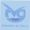

De: La Frikipedia, la enciclopedia extremadamente seria.
De: La Frikipedia, la enciclopedia extremadamente seria. De: La Frikipedia, la enciclopedia extremadamente seria.
| De la serie empresas malignas: | ||
| Luar | ||
|
| ||
| Perteneciente al grupo: | Telegaita, uy perdón Televisión de Galicia | |
| Se dedica a: | Provocar muertes de aburrimiento entre el público de la TVG para así no tener que pagarles la pensión | |
| País de origen: | Gayosia  | |
| Año de fundación: | En aquella época todavía no se habían inventado los números | |
| Super Presidente: | Gayoso | |
| Nivel de maldad: | Sí sintonizas la Gallega en tu casa y no ves Luar te secuestran y te ponen a todo volumen el himno: Apagha o Candil Marica Chus, Chus... vamos malísimos | |
| Empresas absorbidas: | Todas las empresas de micrófonos españolas, lusas, francesas, vamos, europeas y ya empiezan a absorver marcas estadounidenses | |
| Número de empleados: | Personas normales y corrientes secuestradas por Gayoso y por Torito y por Anxo Quintana obligados a hablar xunteiro y a comer micrófonos (malpensados) | |
| Atentados contra la humanidad | Muerte del 235% de la población gallega | |
| ¿Se aconseja trabajar aquí? | Para aquel que desee suicidarse sí, si no de todas maneras si eres gallego y ves la Gallega sin ver Luar te acabarán secuestrando | |
| ¿Se recomienda el boicot? | Es imposible, de hecho todos los que lo han intentado han acabado cómo miembros del público (esclavos que se rien de las paridas sin gracia de Gayoso porque están amenazados de muerte) | |
| Cantidad de denuncias: | El sistema judicial de Galicia está controlado por el presi y por Anxo Quintana y el sistema judicial de Gayosia lo está por Gayoso | |
| Sitio web: | [[1] (Haz Clic en Luar Página oficial de Luar] | |
Luar es un programa mierda que se emite todos los viernes (y para colmo se repite a veces los domingos) en la Televisión de Galicia. Lo presenta y gobierna Xosé Ramón Gayoso, abogado fracasado que puede ver el futuro. Se emite en directo desde una discoteca (lo cual no quiere decir que él programa tenga un ambiente fiestero) y consigue aburrir a miles de espectadores cada semana.
El programa lleva en pantalla desde prácticamente la fundación de la Telegaita S.A. allá por el año 1500 a.F (antes de Fraga). Desde su creación apareció presentándolo el brujo Gayoso cuyos poderes eran adivinar el futuro. Al principio el programa resultaba interesante para la gente, pues aparecía gente bailando muñeiras y gaiteiros, claro, en aquella época eso era una novedad, pero los de la Gallega, cómo andaban mal de presupuesto, no variaron en absolutamente nada los contenidos del programa en estos más de 12 años que se lleva emitiendo, excepto los decorados (mentira) y la cada vez más calva cabeza de Gayoso. A causa de ésto la gente que veía Luar, dejaba de verlo hasta que la maligna Xunta de Galicia lo convirtió en un macabro proyecto, que consistía en aburrir a la gente mayor para que mueran de aburrimiento y no tener que pagarles la pensión. Aún así no mucha gente veía el programa así que decidieron hacerlo obligatorio cómo el Xunteiro, de hecho viene reconocido en el Boletín Oficial de Ghalicia cómo ley nº 3425/69
«...y será obligatorio llevar los pantalones subidos hasta los sobacos cómo Fraga y ver Luar todos los viernes bajo pena de cañonzo...»
~ Ley nº 3425/69 del BOG
Debido a esta inhumana ley, los gallegos han de ver obligatoriamente Luar los viernes, por eso si a un gallego le dices: ¿Quedamos hoy (viernes) por la noche? el te responde con voz de Loquendo: Imposible, querido camarada, he de visualizar el programa "Luar". El proyecto secreto de la Xunta no sólo acaba con la vida de los pensionistas, si no que destroza de forma peor que la droga a cualquier joven (ver: José Tojeiro). La Xunta oculta todos estos datos pero gracias a reporteros de calidad cómo IP anónima podemos verificarlo.
Gracias a Luar tenemos hoy también en la Telegaita a Os Tonechos, otro malévolo proyecto de la Xunta pero con al menos algo de gracia. También por culpa de Luar la gente es obesa, padece infartos, es estéril a parte de otras muchas enfermedades. Dentro de "el club" están también la vieja sin gracia que piropea a Gayoso, las viejas que siempre van vestidas de negro, que en realidad son ancianos travestidos (Dos de los numerosos esclavos de Gayoso) y también pertenece al club asesino (Luar) el mago portuxés cuyos trucos están trucaos (¿me explico?).
Luar congrega cada semana a 245.000 ancianos aprox. ante el televisor (dato real de audiencias) para poder ver al sex-appeal gallego Xosé Ramón Gayoso con sus melenas rubias y su perfecto cuerpo. Lo que ellos no saben es que pronto morirán de aburrimiento por sus gracias ausentes de humor. Luar controla la mayor parte del comercio gallego, se podría decir que es cómo una mafia, te salvan la vida a cambio de beneficios de tu negocio, además para colmo detrás de Luar se encuentran Torito y Anxo Quintana contando los beneficios. En Galicia vayas a dónde vayas todo está controlado por Luar, todo, sólo que la Xunta lo oculta.
 Empresas Empresas 
|
|---|
|
Bimbo $ Burger King $ Coca-Cola $ Duff $ Empresas pesqueras de Osaka $ KFC $ McDonald's $ Nocilla $ Oscar Mayer $ Pepsi $ Pizza Hut $ Starbucks 4Kids $ Air Madrid $ Audioskan $ Blizzard $ Compañía de tranvías da Coruña $ Correos $ Diario AS $ Diario GOL $ Discográfica $ El jueves $ Ikariam $ Marca $ Mundo Deportivo $ Playboy $ Vale Music $ Vitrasa CNN $ Canal Sur $ La 2 $ Luar $ Telerisa $ TV Azteca $ TVE $ Studio Basura $ Teleahinco $ Paka Paka $ Discovery Kids $ Disney XD $ Cuatroº ACME $ Agfa $ Akatsuki $ Bic $ BMW $ Bosque verde $ CLAMP $ Copyleft $ Godbusters $ ETT $ El MAL $ Fisher Price $ Ford $ Greenpeace $ Hombres de negro $ Horóscopo $ Hunosa $ Iglesia maradoniana $ KIEP $ Lego $ Mapfre $ MCC $ Oficina $ Organización XIII $ PDVSA $ RMC $ Ryanair $ Sanrio $ SWAT $ Umbrella $ VolBaguen $ WDC |
Autor(es):